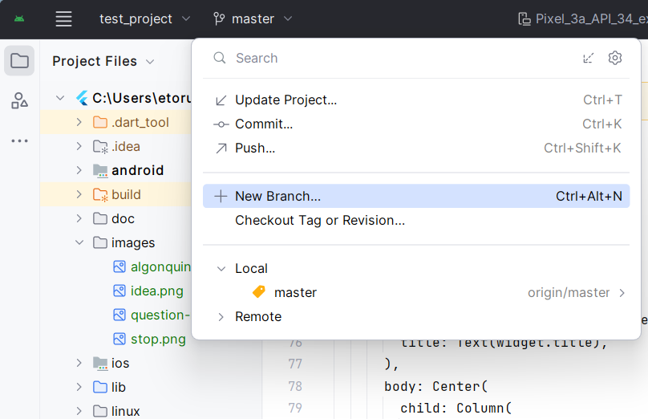
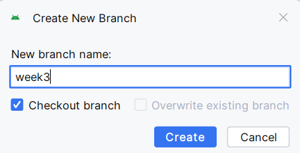
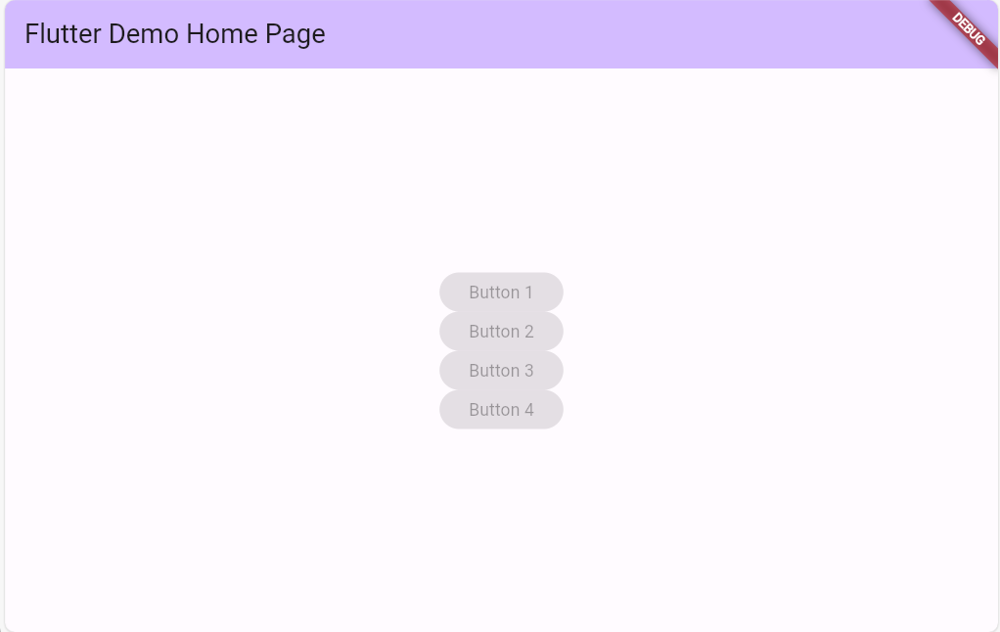
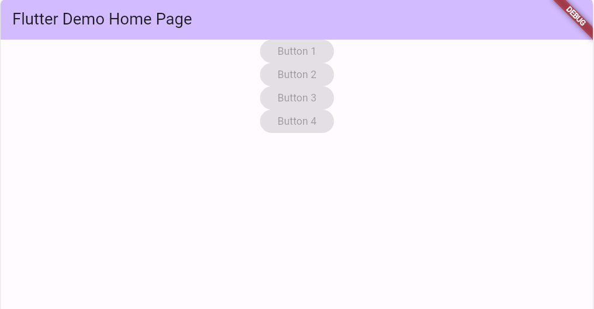
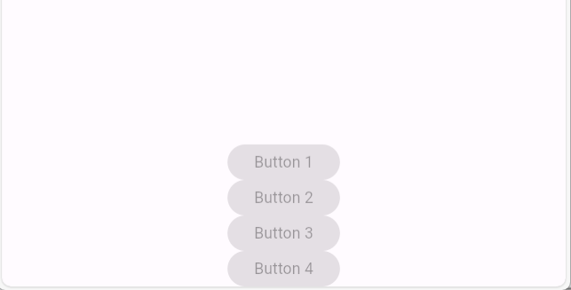
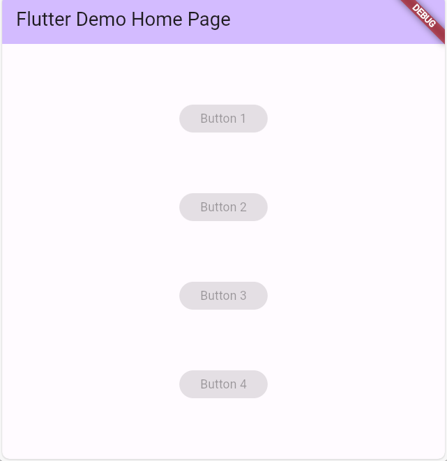
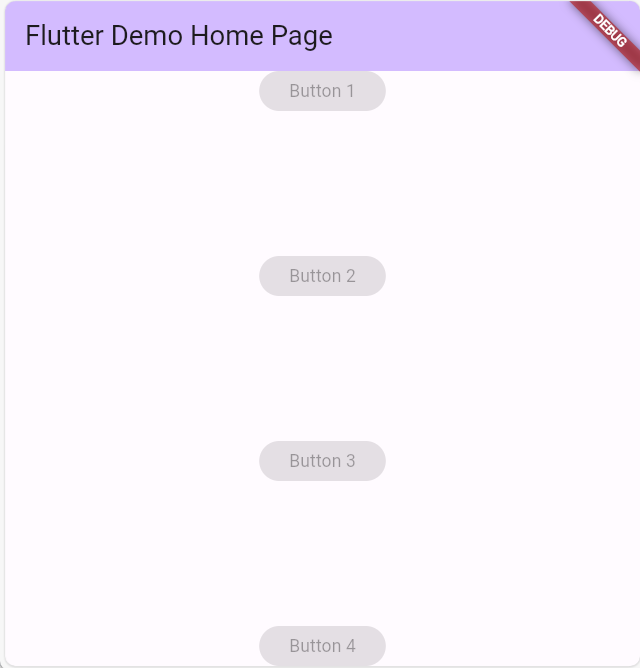
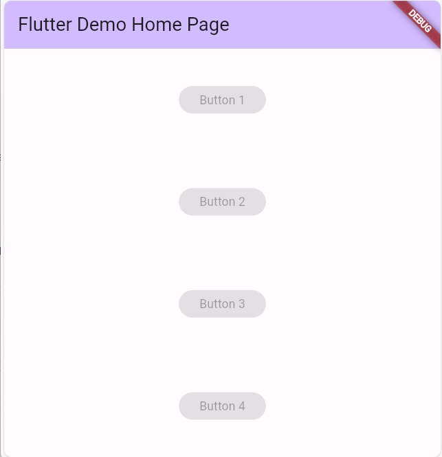

Using branches in Git means that you can add file changes on a different path. You can create a branch through the git menu. Click on New Branch.

Create a new branch called "Week3".

Now, whenever you commit changes, the changes will be applied to the Week3 branch instead of the main branch.
Let's change the contents of the Column( ) so that it is empty:
Column(
mainAxisAlignment: MainAxisAlignment.center,
children: [ ],
)
Some Widgets only take 1 child, like Button, or Center(). The Column() widget takes an array of children:[ ]. Let's add 4 ElevatedButtons with the text: Button 1, Button 2, Button 3, Button 4. This is what MainAxisAlignment.center looks like:

Let's commit these changes now so that we can go back to it later.Next, change the mainAxisAlignent: parameter to: MainAxisAlignment.start. That makes all the children start from the top:

Next, change it to: MainAxisAlignment.end. That makes all the children start at the bottom:

MainAxisAlignment.spaceEvenly creates an even amount of space between the children and the top and bottom:

MainAxisAlignment.spaceBetween makes the children line against the top and bottom of the page and puts all the space between the elements.

MainAxisAlignment.spaceAround is similar to spaceEvenly except that the space at the top and bottom is only half that of the space between the elements.

Your options for spacing elements in a Column are:
These parameters can also be used for Row() instead of Column. Column puts elements vertically, where Row lines them up horizontally from left to right. Basically, there area 6 choices for spacing the mainAxisAlignment when using a Column or Row. We'll look at cross-axis alignment later today.
For more information, have a look at: https://champ96k.medium.com/flutter-crossaxisalignment-vs-mainaxisalignment-5cc220bc0e2c